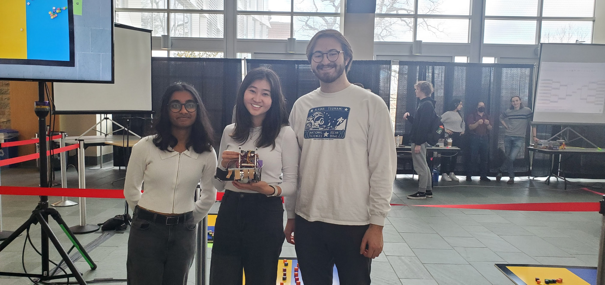

For the final project in MAE 3780: Mechatronics, we were tasked with creating a robot that ran on an Arduino microcontroller and autonomously collected blocks while competing against another robot from our class. All the code was written in C, and we used a color sensor to determine what side of the board we were on and prevent driving out of bounds. We also had laser-cut acrylic arms to help us hoard cubes.
 A picture of me and my wonderful teammates (and meche besties), Evelyn and Alex!You can find our final report below, plus a video of a match!